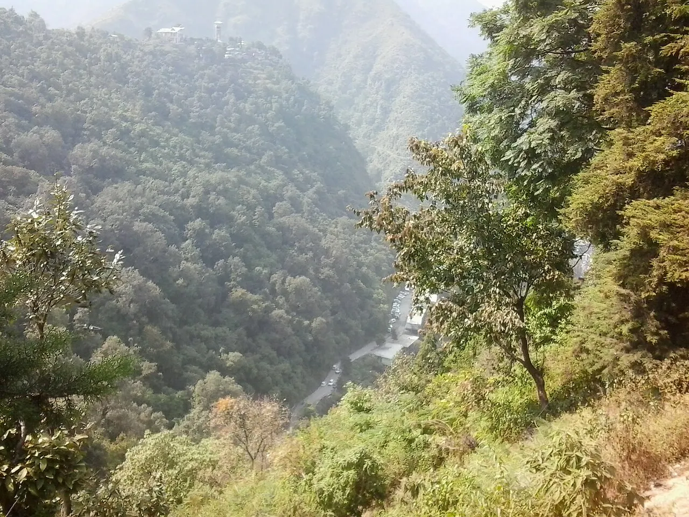

Places covered
Dehradun → Mussoorie → Nainital → Corbett
Your day-by-day journey
Suggested itinerary. Attractions, travel times and arrangements are subject to your written quote and local conditions.
Day 1
Arrive in Dehradun; transfer and check in after arrival. If time permits, see Robber’s Cave area and local markets. Overnight in Dehradun.
Day 2
Travel from Dehradun to Mussoorie; visit Kempty Falls and Mall Road. Admission, activity timings and accessibility are subject to local conditions. Overnight in Mussoorie.
Day 3
Travel from Mussoorie to Nainital; visit Naini Lake and Snow View. Admission, activity timings and accessibility are subject to local conditions. Overnight in Nainital.
Day 4
Travel from Nainital to Corbett; visit optional authorised safari and Corbett landscape. Admission, activity timings and accessibility are subject to local conditions. Overnight in Corbett.
Day 5
After breakfast, check out and depart from Corbett. Departure transfer, road timing and any onward flight or train will be confirmed in the final quotation.
Before you travel
Accommodation, meals, transport, tickets, permits, inclusions and exclusions are confirmed only in your written quotation. Share accessibility needs, children's ages and your preferred pace when enquiring. Activities depend on weather, local access and availability.
Frequently asked questions
Can this tour be customised?
Yes. Dates, routing, accommodation and activities can be adjusted after enquiry.
Are hotels and departures confirmed?
No. Availability, itinerary feasibility and final inclusions require written confirmation.